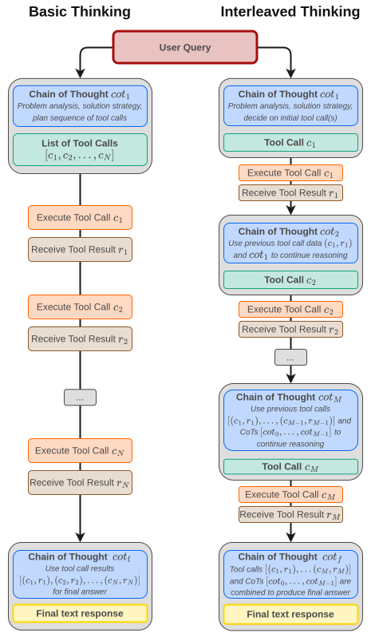
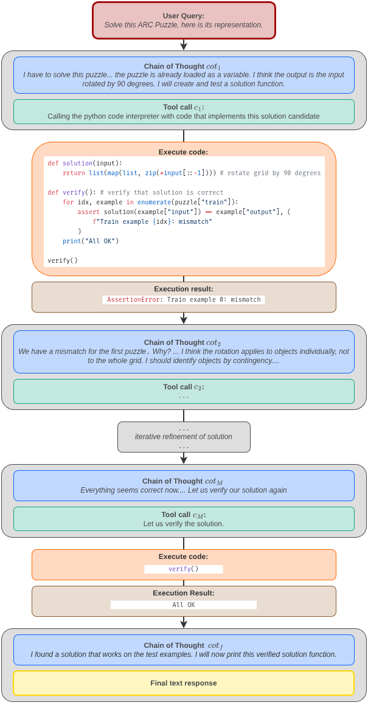

Summary
When reasoning models are given access to a Python read–eval–print loop (REPL), ARC AGI 2 performance jumps significantly relative to plain chain-of-thought (CoT). This happens generally across multiple models, both open-weight and commercial, with the same prompt. On the ARC AGI 2 public evaluation set, GPT OSS 120B High improves from 6.11% (plain CoT) to 26.38% (with REPL). Minimax M2.1, another open-weight model, improves from 3.06% to 10.56%. GPT 5.2 XHigh, a frontier model, goes from 59.81% to 73.36%. This suggests that agentic coding exposes additional fluid intelligence already present in these models, and that this capability can be harnessed by simply providing access to a REPL; no human engineering necessary.
Introduction
ARC AGI is a benchmark that aims to measure human-like fluid intelligence [1]. It requires models to meta-learn a novel 2D grid transformation at test time, and then apply it to test grids.
The biggest accuracy gains in the benchmark have been primarily driven by frontier reasoning model releases, with OpenAI’s o3 (preview) being the first model to achieve human-level performance in ARC AGI 1 [2]. The ARC Prize Foundation treated this as an existence proof of fluid intelligence in frontier models, which ARC AGI 1 was designed to pinpoint [3].
If ARC AGI 1 was a binary measure of the existence of fluid intelligence, ARC AGI 2’s purpose was to measure the level of fluid intelligence. It was explicitly designed to challenge o3 (preview) like systems by demanding more reasoning depth, while still remaining easy for humans [3], [4].
Within a few months of the new benchmark’s existence, new frontier model releases have driven the score from near-noise levels all the way up to 54.2% [5].
In this post, we argue that this is not the full story. We believe that the benchmark leaderboard does not show the ceiling of fluid intelligence available from today’s models. Additional fluid intelligence can be unlocked by providing these models access to a REPL.
As early as the first quarter of 2025, model makers were training reasoning models to interleave thought with action, especially code execution. This capability was already present in OpenAI reasoning models such as o3 and o4-mini, and started appearing in open-weight models from mid-2025 [6], [7]. Models trained in this way seem to have additional fluid intelligence that is largely invisible in the plain CoT regime, but becomes available when models have access to a REPL.
Our solver exploits this new regime in its simplest possible form. We frame ARC AGI puzzles as a program synthesis problem: find a Python function solution(grid: list[list[int]]) -> list[list[int]] that maps all training examples correctly. We use a reasoning model capable of interleaved thinking and provide access to an IPython based REPL.
Despite its simplicity, this setup produces large gains compared to plain CoT across multiple models, both open-weight and commercial. Our code and experiment data are publicly available [8], [9].
How our solver works
Our solver uses the simplest implementation of agentic coding: a tool call loop, similar to the one popularized in a recent article about Claude Code [10].
NoteAgentic tool call loop (pseudocode)
Initialize conversation with system prompt and solver prompt
Initialize tool definition
Loop:
Call model with conversation and tool definition
If the response contains tool call blocks:
Append any thinking blocks in the response to the conversation
(required only for stateless APIs)
For each tool call block containing tool name and tool args:
Execute the tool with tool args
Append the tool result (including errors) to the conversation
Otherwise:
Return the model’s final text outputFor solving ARC AGI puzzles, we set up the tool call loop as follows.
- We task the model to produce a Python function
solution(grid: list[list[int]]) -> list[list[int]]that correctly maps all training inputs to their corresponding outputs. In other words, we frame each puzzle as a program synthesis problem instead of directly predicting output grids, following a well-established line of prior work on ARC AGI [11]. The appendix contains the full prompt. - We provide the model with a coding tool, specifically a stateful IPython based REPL. The statefulness of the environment helps with exploration, robustness, and token efficiency, allowing the model to explore using small code snippets, inspect intermediate results, and reuse previously defined helper functions and variables. The environment preloads a variable
puzzlecontaining the training examples and the test inputs. The environment comes with common third-party libraries that could be useful for solving ARC AGI puzzles (e.g. NumPy, SciPy, NetworkX, scikit-image, PIL, Z3). The appendix contains the full list of installed packages.
Inside the tool call loop, the model executes code dozens of times and once it’s satisfied, outputs a solution function.
This solution function plays a dual role: It is simultaneously a generator of the output grid (which is what is evaluated) and an explanation of the transformation that maps the training inputs to their output.
def solution(grid):
"""
Transform the input grid into a nested square of colored frames.
The input consists of horizontal strips where each whole row has a single color.
For each consecutive block of rows with the same color we create a rectangular
frame whose thickness equals the height of that block. Starting from the
innermost block (the last one in the input) we build the output square
outward by surrounding the current picture with a new frame of the next
outer colour.
The resulting picture is always a square. Its side length is:
innermost_height + 2 * sum(outer_heights)
Parameters
----------
grid : list[list[int]]
Input grid (uniform‑row strips).
Returns
-------
list[list[int]]
Output grid according to the described rule.
"""
# ---------------------------------------------------------------
# 1. Determine the colour blocks (colour, height) from top to bottom.
colours = []
heights = []
prev = None
cnt = 0
for row in grid:
# each row is assumed uniform; take its first cell as the colour
c = row[0]
if prev is None:
prev = c
cnt = 1
elif c == prev:
cnt += 1
else:
colours.append(prev)
heights.append(cnt)
prev = c
cnt = 1
# add the final block
if prev is not None:
colours.append(prev)
heights.append(cnt)
# ---------------------------------------------------------------
# 2. Build the nested frames from the innermost block outwards.
# The innermost block becomes a solid square.
cur_side = heights[-1]
cur_grid = [[colours[-1] for _ in range(cur_side)] for __ in range(cur_side)]
# For every outer block we create a new square, fill it with the block's
# colour, and paste the previous picture into its centre.
for colour, thickness in zip(reversed(colours[:-1]), reversed(heights[:-1])):
new_side = cur_side + 2 * thickness
# new square filled with the outer colour
new_grid = [[colour for _ in range(new_side)] for __ in range(new_side)]
# copy the current picture into the centre
for i in range(cur_side):
new_grid[thickness + i][thickness:thickness + cur_side] = cur_grid[i][:]
# prepare for next iteration
cur_grid = new_grid
cur_side = new_side
# ---------------------------------------------------------------
return cur_grid
Approaches that directly emit the output grids, for instance the plain CoT approach, lack this explanatory artifact. While a model can be prompted to produce an explanation alongside the output, there is no guarantee that such an explanation will faithfully reflect the model’s CoT [12]. The faithfulness issue doesn’t arise in the program synthesis framing, and is a comparative advantage of this approach.
Interleaved thinking
Tool call loops, such as the one described in the previous section, weren’t always as powerful as they are today. Something changed in 2025: model makers started training models to do interleaved thinking [13].
Interleaved thinking can be viewed as a natural extension of test-time compute scaling to multi-step tool use. In this interaction pattern, a model’s reasoning is not confined to a single block before all tool calls, but can occur between tool calls as the model iteratively updates its understanding based on intermediate feedback [14].

Interleaved thinking enables a model to propose a hypothesis, test it, observe what went wrong, and revise the hypothesis before deciding what to do next. In other words, it allows a model to allocate compute flexibly to refinement decisions that must be taken in reaction to ground truth results. Model makers explicitly train for this capability during the agentic RL phase of post-training. For example, the RL environment might be a REPL where the model can run code and inspect results, and the objective might be to write a feature that passes a test suite [7].
This capability first appeared in frontier reasoning models in early 2025. Providers that claim to support it include:
- OpenAI (o3 and o4-mini onwards, including GPT OSS) [6], [7]
- Anthropic (Claude 4 onwards) [15]
- Google (Gemini 2.5 onwards) [16]
- Z.AI (GLM 4.5 onwards) [17]
- Minimax (M2 onwards) [18]
- Moonshot AI (Kimi K2 Thinking onwards) [19]
However, the presence of this interface does not automatically imply that the powerful refinement behavior described above can be elicited reliably. In practice, we found that it depends on many factors, including correct inference engine implementation / API support, and correct client-side implementation. We return to these issues later.
When it does work, however, the impact is known to be substantial [18].

Interleaved thinking is at the heart of the current agentic coding zeitgeist. We find that it also matters for ARC AGI 2. The ARC Prize Foundation has already identified model refinement harnesses as an important axis of improvement in 2025 [5]. In practice, this primarily refers to human-engineered outer refinement loops on top of reasoning model outputs. Interleaved thinking is enabling models to learn such refinement skills directly from data. As a result, refinement behavior can improve with more data, richer environments, and more compute [20].

Results
In this section, we present the results of running our solver on the full ARC AGI 2 public evaluation set consisting of 120 puzzles.
The official ARC AGI evaluation uses a pass@2 metric, meaning that two answer candidates may be submitted for each test input [21]. We run our solver and the plain CoT baseline twice and submit two solutions per test.
We observe a large performance gap compared to plain CoT.
NoteHow to interpret these results
Our results are not directly comparable to the verified leaderboard scores, which are based on a different semi-private evaluation set to control for memorization [22].
However, we believe that our results are still meaningful since we compare against the plain CoT baseline using the same model.
GPT OSS 120B (reasoning effort “high”)
| Model | Plain CoT | Agentic Coding |
|---|---|---|
| Score | 6.11 % | 26.38 % |
| Cost per puzzle | $0.23 | $0.47 |
This represents a > 4x absolute improvement from near-noise performance into frontier model territory.
Minimax M2.1
| Model | Plain CoT | Agentic Coding |
|---|---|---|
| Score | 3.06% | 10.56 % |
| Cost per puzzle | $0.22 | $1.27 |
Although Minimax M2.1’s absolute performance remains modest, the relative gain mirrors the GPT OSS 120B result, suggesting the effect is not model-specific.
GPT 5.2 (reasoning effort “xhigh”) [23]
| Model | Plain CoT | Agentic Coding |
|---|---|---|
| Score | 59.81 % | 73.36 % |
| Cost per puzzle | $2.05 | $5.22 |
The GPT 5.2 results show that even at high baseline performance, agentic coding yields a double-digit absolute gain, indicating that the effect persists well into the frontier regime.
The raw evaluation data, including reasoning traces for the open weight models, is available on Hugging Face [9].
Connection to prior work
The program synthesis framing of ARC AGI puzzles has a rich and varied history. Icecuber’s winning solution in the original 2024 Kaggle ARC competition was an example of classic discrete program search. It relied on a custom DSL and enumerative search to find programs consistent with the training examples [26].
In 2024, large language models became good enough to act as proposal engines for this search. Ryan Greenblatt showed that LLMs can generate Python programs that solve ARC puzzles when combined with massive sampling and iterative refinement [11]. Jeremy Berman pushed this direction even further [27].
In late 2024, OpenAI’s reasoning model o3 (preview) achieved human-level performance on ARC AGI 1. One useful way to interpret o3’s step jump improvement is as an emergent form of test-time search. It was post-trained using large-scale RLVR, and this produces “search in natural language space”: iteratively proposing, testing, and revising explanations in a single chain-of-thought until one fits the demonstrations [2].
ARC AGI 2 was explicitly designed to challenge o3 (preview) like systems by demanding more reasoning depth, while still remaining easy for humans. At the time of release, frontier reasoning models like o3 had near-noise-level performance on the new benchmark [4].
Two threads of progress in 2025
According to ARC Prize Foundation’s own analysis, major improvements in ARC AGI 2 scores in 2025 came from two distinct but complementary directions [28].
Stronger reasoning models
Successive releases of frontier reasoning models steadily improved ARC AGI 2 performance. Models such as Grok 4, GPT-5.1, Gemini 3 Pro, Deep Think and Flash Preview, Claude Opus 4.5, and GPT-5.2 progressively raised verified scores on the benchmark, while also reducing cost by several orders of magnitude. The 2025 performance champion was GPT 5.2 Pro (High), scoring 54.2% at a cost of $15.72 / puzzle, while the efficiency champion was Gemini 3 Flash Preview (High) scoring 33.6% at a meager cost of $0.231 / puzzle. A key property of these reasoning models is their ability to improve pass@1 performance [29]. As a result, the need for massive sampling has largely disappeared.
Refinement systems on top of reasoning models
In parallel, a second line of work proved that large performance jumps can be obtained by refining reasoning model outputs through explicit outer loops. Sakana AI introduced AB-MCTS, combining sampling and refinement with multi-model collaboration [30]. Berman adapted and extended his evolutionary methods to new reasoning models [31]. Poetiq combined refinement with optional multi-model collaboration, reporting strong verified results on ARC AGI 2 [32].
Width, depth, and what changed
A useful way to unify these threads is through a search analogy.
- Massive sampling corresponds to search width: generate many candidates and hope one succeeds.
- Refinement corresponds to search depth: iteratively improve a candidate based on feedback.
In 2024, strong ARC systems typically relied on both large width and deep refinement loops. In 2025, stronger reasoning models dramatically reduced the need for width, but depth was still often supplied by human-designed systems layered on top of the model.
Our observation is that interleaved thinking collapses much of this remaining depth into the model itself. This places our approach closest in spirit to refinement-on-reasoning-model systems such as Poetiq’s, but with a key difference: refinement happens within a single model turn, not across an engineered outer loop. Under interleaved thinking, a single model turn can involve dozens of code executions and intermediate checks, dramatically increasing the density of refinement signal available to the model.
The broader point is that refinement becomes a learned capability rather than a hand-authored procedure. Seen in this light, our work provides signs of a regime shift. Much of what appeared as bespoke refinement in 2025 can perhaps already be recovered by evaluating models in the agentic coding regime. Our solver is intentionally minimal for this reason: it aims to strip away as much human-designed depth as possible while still capturing the dominant effect.
Interleaved thinking is currently fragile
We developed and validated our core system using the open weight model GPT OSS 120B. To our knowledge, this is the first report of an OSS model achieving competitive performance on ARC AGI 2. We hope this will act as a research enabler since open models make experimentation cheaper, more reproducible, and debuggable in ways that are difficult or impossible with closed APIs.
This choice also shaped our understanding of interleaved thinking itself.
In early experiments with GPT OSS, which we did around September 2025, we used the Chat Completions compatible OpenRouter API for inference. Most providers, including those classified as “exacto” by OpenRouter, threw errors or failed softly. By soft failure, we mean that the model responded, but without interleaved thinking. We got positive results from Fireworks during a brief window, but it regressed afterwards.
We eventually moved to self-hosted inference using vLLM and SGLang. In both cases, we encountered bugs related to Harmony chat template parsing, once again leading to errors or soft failures. We finally obtained reliable interleaved thinking by patching the vLLM Responses API and adding client-side hardening to recover from model-specific issues, e.g., malformed tool calls.
We are not the first to encounter these issues. OpenRouter has reported degraded tool calling across many providers and introduced a whitelist system (“exacto”) intended to filter for reliability [33]. We didn’t benefit from the “exacto” system, but perhaps others will. Multiple issues related to GPT OSS tool calling are open on the vLLM and SGLang GitHub repositories, and just a month prior to our publication, a PR addressing many Harmony parsing issues in vLLM’s Chat Completions API was merged [34].
We are also publishing our Responses API patch for vLLM alongside this post [35]. Our hope is that these developments make it substantially easier for others to experience the full intelligence of GPT OSS, which we found to be a very capable model once the interaction regime is stabilized.
Crucially, these issues were diagnosable precisely because the model and inference stack were open. With a closed model, it’s usually unclear whether failures originated in the model, the inference engine, the API, or the provider.
Gemini provides a useful contrast. When used with our solver, Gemini 2.5 Pro and Gemini 2.5 Flash often returned opaque errors or soft failures, depending on whether we used the Chat Completions compatible client or the native client. We were unable to determine the exact cause, but based on many public GitHub issues, one of the plausible issues seemed to be that malformed tool calls (for example, invalid JSON) are not returned to the client, but instead terminate the interaction [36]. GPT OSS also emits malformed tool calls, but when the error is passed back to the model, it often corrects itself.
Taken together, these experiences suggest that interleaved thinking is currently a fragile interaction regime that only manifests when many components behave correctly at the same time.
Each layer of the stack matters:
- Model. Agentic RLVR training alone may not guarantee emergent refinement behavior in every use case.
- Provider API. The API should preferably be stateful (e.g. a Responses-style API), or, in the case of stateless APIs (e.g. Chat Completions), allow clients to pass back prior reasoning blocks and handle those in a way that aligns with the model’s training. Both types of APIs must surface errors transparently so they can be handled by the client.
- Inference engines. Frameworks such as vLLM and SGLang must faithfully implement model-specific chat templates, including edge cases, and should pass errors back as transparently as possible.
- Middleware APIs. Middleware layers such as OpenRouter must have feature parity with the underlying provider APIs and translate client requests and responses faithfully, again preferring transparent error propagation.
- Client-side state management. When using stateless APIs, the client must correctly replay previous thinking content back to the model.
When any of these layers fails, the outcome is often ambiguous. Sometimes the failure is hard, in the form of server errors that terminate the interaction. More often, it is soft: the model still responds, but without interleaved thinking. It seems the model is dumber than it actually is.
Our sense is that the community is aware of these problems and is making steady progress towards more reliable interleaved thinking. The wholesale move away from stateless APIs to stateful APIs last year is a part of this trend. Until things stabilize, we think that evals like OpenRouter’s “exacto” system or the K2-Vendor-Verifier could help a lot, as long as they explicitly evaluate this interaction regime [37].
NotePractical takeaway
If a model capable interleaved thinking appears unexpectedly weak in agentic use cases, common failure modes include:
- Loss of prior reasoning state in stateless APIs
- Incorrect chat template implementation in inference engines
- Silent suppression of malformed tool calls
- Middlewares not translating API calls properly
- Tool errors not being surfaced to the model
Conclusion
We show that agentic coding unlocks additional fluid intelligence in reasoning language models. Empirically, this manifests as large performance jumps in ARC AGI 2 across models. A medium-sized open-weight model achieves competitive performance on ARC AGI 2 under this setup, and the same system transfers to a frontier commercial model without modification.
At this stage, it is unclear whether the gains happen because code execution is a stronger form of verification compared to plain CoT or because it encourages qualitatively different thinking patterns. It would be interesting to study this question in the future.
The score we obtain using GPT 5.2 Xhigh is comparable to the unverified SOTA score recently reported by Poetiq using the same model in a domain-specific application layer harness [25]. We haven’t submitted our solver to the official leaderboard yet because we have early indications that we can push our score even further by using general purpose methods to increase test time compute e.g. sampling and majority voting. We intend to make an official leaderboard submission once we reach that point. We would appreciate any OpenAI API credit donations that can help us make this a reality.
We would also be very happy to test other models capable of interleaved thinking on ARC AGI 2 and check if the trend is universal. Please get in touch with us if you are interested.
Thank you for taking the time to read our work.
About us
We are a small group of hobbyists interested in the hard questions in AI.
Dibya Chakravorty
I majored in Physics and got interested in AGI after reading The Emperor’s New Mind by Roger Penrose.
Professionally, I work as a generalist Python developer and cloud architect. Alongside this, I organize the Artificial General Intelligence meetup group in Munich to discuss AI research with like-minded people, and I pursue independent work in machine learning research, application, and education.
I’m now looking to focus this effort on more ambitious AI projects and am very happy to talk to people working on them.
Debsankha Manik
I am a theoretical physicist by training. My research interests include dynamical systems and graph theory. I work in the intersection of data science and discrete optimization. I have developed and tought courses on data science for graduate students. I am interested in open source, privacy preserving AI solutions.
Bernhard Altaner
After studying physics and mathematics in Konstanz and Cambridge, I completed a PhD in Physics at the University of Göttingen on information and entropy in physics.
I then worked in academia in Luxembourg and Munich on chemical evolution and the origins of life, and now work in R&D on smart energy management while pursuing side projects like this one.
Philosophically, I am interested in consciousness, particularly how it might emerge as an evolutionary consequence when a subsystem of the universe forms a model of its environment.
Nicolas Berg
After studying Information Technology at the Karlsruhe Institute of Technology, I worked as an engineer in the automotive industry in Munich.
My interest in AGI was sparked by Dibya’s contagious passion at the first event of his AGI Munich meetup, which I later joined and now co-host.
I am currently in the early process of co-building a company to develop an AI coach aimed at bridging gaps between students, educators, mentors, and hybrid online/local maker communities, with a focus on learner agency, maker-based practice, and gaps in classical education.
Our story
We started this project in the summer of 2025 with the initial goal of participating in the ARC Prize Kaggle competition. Early on, we were exploring agentic coding with frontier reasoning models and found that models like o3 and o4-mini could generate high-quality synthetic ARC-style puzzles. Our plan was to use these synthetic puzzles to train a smaller model via agentic reinforcement learning (RLVR with interleaved thinking).
To bootstrap this process, we needed successful solution traces from an open-weight reasoning model for cold-start supervised fine-tuning. That requirement led us to investigate GPT-OSS-120B. While doing so, we noticed something unexpected: simply placing the model into an agentic coding regime produced large and consistent score improvements on ARC AGI tasks. We were seeing scores that we didn’t think was possible for a medium sized OSS model.
This observation ultimately shifted the focus of our work as we wanted to find out how universally this observation applies while staying within our resource constraints. The results of that investigation are what you see in this post. We hope you enjoy it.
Acknowledgements
We gratefully acknowledge Lambda for their generous support in the form of platform credits. This work would not have been possible without their commitment to supporting open-source research on ARC AGI. We found the Lambda platform intuitive and easy to use, and we can confidently recommend it to anyone seeking cloud resources for training or inference workloads.
We also thank Somayeh Vojdani and Tariq Baig-Meininghaus for their stimulating discussions, encouragement, and continued support.
We thank Hyperbolic for providing free credits that helped support this research.
We are grateful to the ARC Prize Foundation for creating a platform that inspires and enables open-source progress toward AGI.
Finally, Dibya Chakravorty wishes to thank his wife, Aurica Schön, and his son, Milan Schön, for their patience, support, and understanding while he devoted a significant portion of his free time to this project.
References
[1]
“On the measure of intelligence.” Available: https://arxiv.org/abs/1911.01547
[2]
“OpenAI o3 breakthrough high score on ARC-AGI-PUB.” Available: https://arcprize.org/blog/oai-o3-pub-breakthrough
[3]
“ARC-AGI-2 overview with francois chollet.” Available: https://www.youtube.com/watch?v=TWHezX43I-4
[4]
“ARC-AGI-2: A new challenge for frontier AI reasoning systems.” Available: https://arxiv.org/abs/2505.11831
[5]
“ARC prize 2025: Technical report.” Available: https://arxiv.org/abs/2601.10904
[6]
“Introducing o3 and o4-mini (see "toward agentic tool use" section and corresponding example traces).” Available: https://openai.com/index/introducing-o3-and-o4-mini/
[7]
“Gpt-oss-120b & gpt-oss-20b model card.” Available: https://arxiv.org/abs/2508.10925
[8]
“Code repository that allows reproducing the results in this post.” Available: https://github.com/gutfeeling/arc-agi-2-submission
[9]
“Data from the experiments in this post.” Available: https://huggingface.co/datasets/arcagi2/arcagi2-agentic-coding-publication
[10]
“The emperor has no clothes: How to code claude code in 200 lines of code.” Available: https://www.mihaileric.com/The-Emperor-Has-No-Clothes/
[11]
“Getting 50.” Available: https://blog.redwoodresearch.org/p/getting-50-sota-on-arc-agi-with-gpt
[12]
“Reasoning models don’t always say what they think.” Available: https://www.anthropic.com/research/reasoning-models-dont-say-think
[13]
“Interleaved thinking - VLLM docs.” Available: https://docs.vllm.ai/en/stable/features/interleaved_thinking/
[14]
“Interleaved thinking - claude docs (see the comparative example in "tool use without interleaved thinking" and "tool use with interleaved thinking").” Available: https://platform.claude.com/docs/en/build-with-claude/extended-thinking#interleaved-thinking
[15]
“Differences in thinking across claude model versions.” Available: https://platform.claude.com/docs/en/build-with-claude/extended-thinking#differences-in-thinking-across-model-versions
[16]
“Gemini 2.5: Pushing the frontier with advanced reasoning, multimodality, long context, and next generation agentic capabilities.” Available: https://arxiv.org/abs/2507.06261
[17]
“Interleaved thinking - z.AI developer documentation.” Available: https://docs.z.ai/guides/capabilities/thinking-mode#interleaved-thinking
[18]
“Interleaved thinking unlocks reliable MiniMax-M2 agentic capability.” Available: https://www.minimax.io/news/why-is-interleaved-thinking-important-for-m2
[19]
“Introducing kimi K2 thinking.” Available: https://moonshotai.github.io/Kimi-K2/thinking.html
[20]
“The bitter lesson.” Available: http://www.incompleteideas.net/IncIdeas/BitterLesson.html
[21]
“Scoring script in the official ARC AGI benchmarking repository.” Available: https://github.com/arcprize/arc-agi-benchmarking/blob/main/src/arc_agi_benchmarking/scoring/scoring.py
[22]
“ARC prize verified - official testing policy.” Available: https://arcprize.org/policy
[23]
“GPT 5.2 system card.” Available: https://openai.com/index/gpt-5-system-card-update-gpt-5-2/
[24]
“Official GPT 5.2 XHigh results - huggingface.” Available: https://huggingface.co/datasets/arcprize/arc_agi_v2_public_eval/blob/main/gpt-5-2-2025-12-11-thinking-xhigh/results.json
[25]
“GPT 5.2 xhigh score with the poetiq harness.” Available: https://x.com/poetiq_ai/status/2003546910427361402?s=20
[26]
“Icecuber’s 1st place solution + code and official documentation.” Available: https://www.kaggle.com/competitions/abstraction-and-reasoning-challenge/writeups/icecuber-1st-place-solution-code-and-official-docu
[27]
“How i came in first on ARC-AGI-pub using sonnet 3.5 with evolutionary test-time compute.” Available: https://jeremyberman.substack.com/p/how-i-got-a-record-536-on-arc-agi
[28]
“ARC prize 2025 results & analysis.” Available: https://arcprize.org/blog/arc-prize-2025-results-analysis
[29]
“Does reinforcement learning really incentivize reasoning capacity in LLMs beyond the base model?” Available: https://arxiv.org/abs/2504.13837
[30]
“Wider or deeper? Scaling LLM inference-time compute with adaptive branching tree search.” Available: https://arxiv.org/abs/2503.04412
[31]
“How i got the highest score on ARC-AGI again swapping python for english.” Available: https://jeremyberman.substack.com/p/how-i-got-the-highest-score-on-arc-agi-again
[32]
“Poetiq shatters ARC-AGI-2 state of the art at half the cost.” Available: https://poetiq.ai/posts/arcagi_verified/
[33]
“Provider variance: Introducing exacto.” Available: https://openrouter.ai/announcements/provider-variance-introducing-exacto
[34]
“Gpt-oss-120b tool calls - GitHub issue on VLLM repository.” Available: https://github.com/vllm-project/vllm/issues/22337
[35]
“Responses API patch that we used to reliably elicit interleaved thinking in GPT OSS 120B.” Available: https://github.com/gutfeeling/arc-agi-2-submission/blob/master/src/vllm_patch/harmony_utils.py
[36]
“MALFORMED_FUNCTION_CALL finish reason happens too frequently with vertex AI - build with google AI forum.” Available: https://discuss.ai.google.dev/t/malformed-function-call-finish-reason-happens-too-frequently-with-vertex-ai/93630
[37]
“K2-vendor-verifier.” Available: https://github.com/MoonshotAI/K2-Vendor-Verifier
Appendix
System prompt
# Tools
## python
Use this tool to execute Python code in your chain of thought.
When you send a message containing Python code to python, it will be executed in a stateful Jupyter notebook environment. The environment supports common third party libraries like numpy, scipy, shapely, networkx, scikit-image, more-itertools, pillow, python-constraint, ortools and z3-solver. python will respond with the output of the execution or time out after 120.0 seconds.
### Usage guideline
1. Use the variables and functions already loaded in the Jupyter notebook instead of defining them yourself. The user message will provide a complete list of such variables and functions.
2. Prefer to write reusable functions. These will persist in the stateful Jupyter notebook and can be referenced in later code snippets without having to define them again.Solver prompt
You are an expert ARC AGI puzzle solver. Please solve the puzzle given below.
# Background information about ARC AGI puzzles
Each task consists of a small number of demonstration examples (3.3 on average), and a small number of test examples (1 - 3).
Each example consists of an "input grid" and an "output grid". Each "grid" is a literal grid of colored squares There are 10 unique colors. A grid can be any height or width between 1x1 and 30x30, inclusive.
The color code is as follows:
0 - black
1 - navy blue
2 - red
3 - green
4 - yellow
5 - gray
6 - pink
7 - orange
8 - sky blue
9 - maroon
When solving an evaluation task, a test-taker has access to the training examples for the task (both the input and output grids), as well as the input grid of the test examples for the task. The test-taker must construct on its own the output grid corresponding to the input grid of each test example. "Constructing the output grid" is done entirely from scratch, meaning that the test-taker must decide what the height and width of the output grid should be, what colors they should place on the grid, and where. The task is successfully solved if the test-taker can produce the exact correct answer on all test examples for the task (binary measure of success).
The mapping from integers (0-9) to color names is arbitrary and should be treated as categorical labels; the transformation rule never relies on the specific integer–color pairing.
ARC AGI puzzle solutions feel "natural" to humans. Natural rules tend to build on visual priors and small-number counting. They are visually immediate or prominent for humans. That is why humans from all educational backgrounds are able to solve these puzzles. Rules that depend on non-visual considerations (e.g. mathematics that's more advanced than small number counting) or inelegant mechanics (e.g. tie-breakers, complex conditional rules, special exceptions) are considered "unnatural."
This doesn't mean puzzles have to be simple or easy. Common patterns that puzzles use to increase difficulty are:
- **Rule composition:** multiple simple, natural rules are applied in sequence, with one transformation setting up the next.
- **Contextual application:** a simple if/else based on a visually clear feature.
- **In-grid symbol definition:** certain shapes or patterns act as symbols whose meaning is established using the training examples and which control some aspect of the transformation. The meaning can even vary across training examples.
- **Iterated steps:** a simple action is applied repeatedly (as in assembling pieces of a jigsaw), where each step constrains the next. Repetition is restricted to a small number.
- **Approximate features**: Features that are easily detected by humans, but hard to detect using naive algorithms. Examples are slightly broken symmetry, slightly broken continuity, off-center symmetry axes, objects defined via 8-connectivity etc.
- **Non-locality:** the solution requires applying changes to one region, with the changes depending on features in a different, distant region.
# Puzzle to solve
{{puzzle}}
# Task aids
You may execute code in the Jupyter notebook environment.
Variables available in the Jupyter notebook:
- `puzzle`: A Python `dict` containing the training and test grids. The key "train" contains the training examples in a list. Similarly, the key "test" contains the test examples as a list. Each training/test example is a dict containing keys "input" and "output". The values are the grids expressed as list of lists of integers (0 - 9). Access: `puzzle["train"][i]["input"]`, `puzzle["train"][i]["output"]`, `puzzle["test"][j]["input"]`.
Your very first code execution should be `puzzle.keys()` to check data access.
Don't print the `puzzle` dict, because it prints out the grids that are already present in this user message and consumes valuable token budget.
# Your task
Please solve the puzzle. Solving the puzzle means constructing a function `solution(grid: list[list[int]])` that implements the transformation from input grid to output grid shown in the training examples. The solution must work on all training examples.
```
for idx, example in enumerate(puzzle["train"]):
assert solution(example["input"]) == example["output"], f"Train example {idx}: mismatch"
```
The solution must generalize to the test input(s). Solutions that cheat by hardcoding the training example outputs are not acceptable.
# Output format (STRICT)
Your response must contain a single Python code block fenced by ```python ... ```. Must include a `solution` function. Must be self-contained i.e. include all necessary imports and helper functions.Full list of libraries installed in the stateful IPython based code interpreter
numpy
scipy
shapely
networkx
scikit-image
more-itertools
pillow
python-constraint
ortools
z3-solver